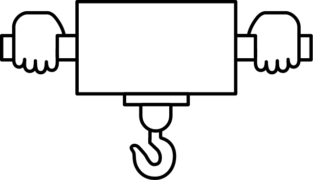

Features of PowerArm
Reduces workload and ensures safety!
A human-assist product that frees workers from heavy labor
Based on the concept of "for workers," the PowerArm is a "human-assist product" that contributes to reducing work burden and ensuring safety in the workplace.
According to the Ministry of Health, Labor and Welfare's Occupational Disease Occurrence Status Survey (2021), "lower back pain" accounts for approximately 65% of all occupational disorders.
(Excluding cases caused by Pathogens)
In today's world, where the realization of a comfortable work environment and the elimination of labor shortages are demanded by the active participation of seniors and all genders, the implementation of work style reforms, "reducing the burden of heavy work and ensuring safety" is an important issue.
As a solution, human-assist devices that have evolved to be closer to workers have been adopted in various industries.
Features of the "PowerArm" human-assist device
-
POINT 01
Simple
Simple structure with light operating force and easy operation
-
POINT 02
Compact

Compact but with wide range of motion
-
POINT 03
Safety

Safety mechanism allows safe use by anyone
POINT 01 Simple
Simple structure with light operating force and easy operation
-
Simple assistive device based on pneumatic control
A pneumatic cylinder is used as a part of the main body.The simple mechanism allows for easy handling.Smooth and light operation is possible only with a pneumatic drive.

-
80kgの重量物も簡単持ち上げ
Safe work can be performed by simply turning ON the power and gripping the handle.3 types of arms can be selected according to the payload, enabling lifting of heavy objects up to 80 kg.

-
No teaching required! Easy installation
After fixing the anchor and air piping, simply plug into an outlet. Teaching is not required.Since it is an assist device that assists from below, there is no need for a ceiling installation.

POINT 02 Compact
Compact but with wide range of motion
-
Supports a wide range of motion to suit your usage
Up to 3 arms can be connected to extend the range of motion.The combination of arms can be freely adjusted according to the customer's application and location.

-
Compact
The multi-axis specification enables folding for a more compact storage than the arm or belt types.With the dolly specification, it can be used freely at any location, and be put away when not in use.

-
For a wider range of motion
Arm (axis) extensions enable an even wider range of motion.

POINT 03 Safety
Safety mechanism allows safe use by anyone
-
Snag prevention
The joint gaps are designed to prevent fingers and other objects from being snagged.Also, even when the joints are closed, the design prevents fingers from being snagged.

-
Locks position when the power (air, electricity) is turned OFF
In addition to a position-locking function (standard equipment) via block valve, a rotation lock can be mounted on the normally closed type (option).This enables position-locking during emergency stops, preventing operator injury and falling workpieces.

-
Mechanical lock specifications
With the standard position locking function, the arm moves down gradually when stopped for long periods. However, with the mechanical lock specification, this retraction can be prevented by the mechanical position locking function built into the body.
Comparative Table of Assistive Devices
The following table summarizes the differences in features of assistive equipment that is often considered together with PowerArms.
| Compactness | Mobility | Range of motion | Payload | Price | ||
|---|---|---|---|---|---|---|
| PowerArm | 〇 | 〇 | 〇 | 〇 | 〇 | |
| Arm balancer | △ | △ | 〇 | ◎ | △ | |
| Hoisting balancer | △ (If horizontal rails for motion is required) | △ | × (Mark "O" for horizontal rails) | 〇 | △ (If horizontal rails for motion is required) | |
| Power suit | ◎ | ◎ | ◎ | × | 〇 | |
| Industrial robot | △ (Fences, etc., required) | × | 〇 | 〇 | × | |
* The above is based on general standards.These do not necessarily apply.価格は設置費を含むとする。
Product lineup
In addition to the standard PowerArm, the Mecha-lock and the Palletizing specifications can be selected as options.
Mechanical lock specifications
Make the transport work safer and easier.
The built-in lock function allows the arm to be locked in the vertical movable range, improving workability and safety by eliminating rising/sinking caused by changes in the weight of heavy objects, thereby enhancing workability and safety.

Palletizing specifications
Enables space-saving stacking and unloading of work.
Equipped with a vertical shaft for easy stacking and unloading in the palletizing process.

The following options are available for the PowerArm according to the specifications.

Arm attachment
Attachments can be mounted to the arm extremities according to the work to be conveyed. A total of 6 types of attachments can be selected.